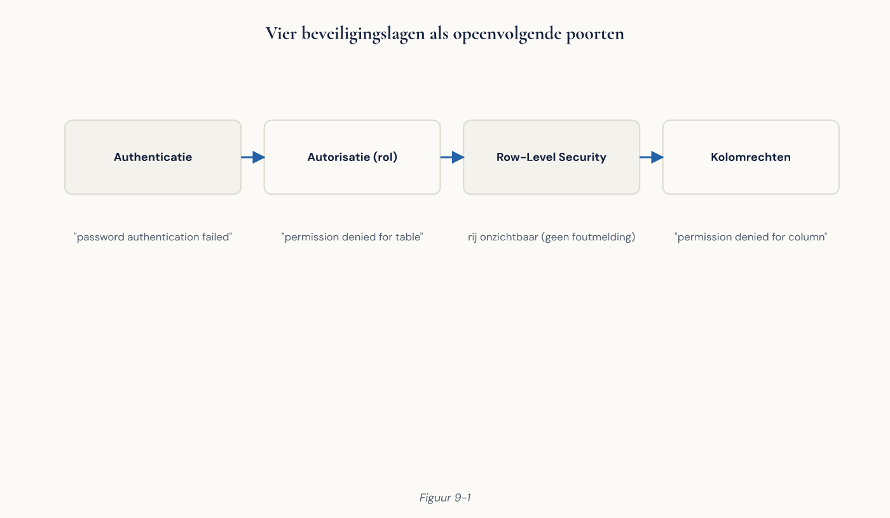

Deel 9 — Rollen, rechten en security
Cursus Databasemanagement — Niveau 1: Fundament Deelnemersreader | Dagdeel 9 van 10 Aansluiting: EDB PostgreSQL Associate — domeinen “Security” en “User management”
Inhoud
- Leerdoelen
- Het laatste probleem uit deel 1
- Vier lagen van toegang
- Verbindingen: pg_hba.conf
- Rollen: gebruikers en groepen
- Wachtwoorden en verificatie
- Rechten: GRANT en REVOKE
- De publieke valkuil
- Standaardrechten voor nieuwe objecten
- Het rollenmodel: leesrol, schrijfrol, applicatierol
- Rechten op kolomniveau
- Views als toegangslaag
- Row level security
- SECURITY DEFINER-functies
- Superuser en waarom je die niet gebruikt
- Encryptie
- Auditing en logging
- Privacy: AVG in de database
- Rechten inventariseren
- Veelgemaakte fouten
- Aansluiting op de certificering
- Kernbegrippen
1. Leerdoelen
Na dit deel kun je:
- de vier lagen van toegangsbeheer benoemen en zeggen welke laag welk probleem oplost;
- uitleggen wat
pg_hba.confdoet en waarom hij vóór alle rechten komt; - rollen aanmaken en het onderscheid tussen gebruikers en groepen toepassen;
- rechten toekennen en intrekken op database-, schema-, tabel- en kolomniveau;
- de valkuil van de
PUBLIC-rol herkennen en dichtzetten; - standaardrechten instellen zodat nieuwe tabellen automatisch goed staan;
- een rollenmodel opzetten met scheiding tussen lezen, schrijven en eigenaarschap;
- row level security toepassen en de gevolgen ervan overzien;
- beargumenteren waarom applicaties nooit als superuser verbinden;
- de AVG-beginselen vertalen naar concrete maatregelen in de database.
2. Het laatste probleem uit deel 1
“Een stagiair krijgt toegang tot de map met werkgeverdata om een analyse te maken en ziet daarbij ook de bestanden met deelnemergegevens inclusief burgerservicenummers.”
Dat is het zesde en laatste probleem van de schil bij Meridiaan. De andere vijf zijn opgelost: normalisatie (deel 5), constraints (deel 6), transacties (deel 7), en herstelbaarheid via WAL (deel 2). Vandaag sluit de lijst.
Let op wat er precies misging. De stagiair kreeg legitiem toegang tot iets, en die toegang bleek breder dan bedoeld. Dat is de normale vorm van een beveiligingsprobleem: niet een inbreker, maar iemand met te veel rechten die iets ziet wat hem niet aangaat.
Daaruit volgt het beginsel dat dit hele deel draagt:
Geef de minste rechten die het werk mogelijk maken, en niet meer.
Klinkt vanzelfsprekend. In de praktijk krijgt vrijwel elke applicatie bij Meridiaan straks één databasegebruiker met alle rechten op alles, omdat dat sneller werkt tijdens het bouwen. Dat is de gewoonte die je vandaag leert doorbreken.
3. Vier lagen van toegang
Toegang tot een PostgreSQL-database wordt op vier plekken bepaald. Ze werken in volgorde, en een GRANT helpt niets als de eerste laag je al tegenhoudt.
| Laag | Vraag | Waar geregeld |
|---|---|---|
| 1. Netwerk | Kun je de server bereiken? | Firewall, listen_addresses |
| 2. Verbinding | Mag jij van daaraf verbinden, en hoe bewijs je wie je bent? | pg_hba.conf |
| 3. Rollen | Wie ben je, en tot welke groepen behoor je? | CREATE ROLE |
| 4. Rechten | Wat mag je met welk object? | GRANT / REVOKE |
Bij een toegangsprobleem loop je ze in deze volgorde af. Het meest gemaakte diagnosefout is meteen naar laag 4 kijken terwijl het probleem in laag 2 zit.

4. Verbindingen: pg_hba.conf
pg_hba.conf (host-based authentication) staat in het datadirectory (deel 2) en bepaalt wie van waar op welke manier mag verbinden. Hij wordt van boven naar beneden gelezen; de eerste passende regel geldt, de rest wordt genegeerd.
# TYPE DATABASE USER ADDRESS METHOD
local all postgres peer
host meridiaan meridiaan_app 10.0.1.0/24 scram-sha-256
host all all 0.0.0.0/0 reject
De belangrijkste methoden:
| Methode | Betekent |
|---|---|
scram-sha-256 |
Wachtwoord, veilig gehasht. De standaardkeuze. |
md5 |
Verouderd; alleen nog voor oude clients |
peer |
Lokaal: de OS-gebruikersnaam moet gelijk zijn aan de rolnaam |
cert |
Clientcertificaat |
reject |
Weiger expliciet |
trust |
Geen controle. Nooit gebruiken buiten een wegwerpomgeving. |
Twee dingen om te onthouden:
De volgorde is beslissend. Een regel die alles toestaat bovenaan maakt alles daaronder betekenisloos. Zet specifieke regels boven algemene.
Wijzigingen vereisen een herlaadactie:
SELECT pg_reload_conf();
Een herstart is niet nodig. Controleer daarna:
SELECT * FROM pg_hba_file_rules WHERE error IS NOT NULL;
Die view toont regels met fouten — handig, want een typefout in dit bestand kan je buitensluiten.
5. Rollen: gebruikers en groepen
PostgreSQL kent geen apart begrip “gebruiker” en “groep”. Er zijn alleen rollen, en het enige verschil is of een rol mag inloggen.
CREATE ROLE meridiaan_lezer; -- groep (NOLOGIN is standaard)
CREATE ROLE anouk LOGIN PASSWORD 'wachtwoord'; -- gebruiker
GRANT meridiaan_lezer TO anouk; -- lidmaatschap
CREATE USER is precies hetzelfde als CREATE ROLE … LOGIN; het bestaat alleen voor de leesbaarheid.
Het model dat je aanhoudt:
- Rechten geef je aan groepsrollen, nooit rechtstreeks aan personen.
- Personen krijgen lidmaatschap van de groepen die bij hun functie horen.
Waarom dat ertoe doet: gaat Anouk weg, dan verwijder je één rol. Zijn de rechten rechtstreeks aan haar toegekend, dan moet je ze stuk voor stuk terugvinden — en dat lukt zelden volledig. Bij een functiewijziging geldt hetzelfde: lidmaatschap intrekken is één handeling, rechten uitzoeken is een project.
Nuttige rolattributen:
| Attribuut | Betekent |
|---|---|
LOGIN |
Mag verbinden |
SUPERUSER |
Omzeilt alle rechtencontroles |
CREATEDB |
Mag databases maken |
CREATEROLE |
Mag rollen maken |
NOINHERIT |
Erft rechten niet automatisch; vereist SET ROLE |
CONNECTION LIMIT n |
Maximum aantal gelijktijdige verbindingen |
VALID UNTIL 'datum' |
Vervaldatum — nuttig voor tijdelijke toegang |
VALID UNTIL is het antwoord op de stagiair uit deel 1: geef tijdelijke toegang een einddatum, dan hoeft niemand eraan te denken hem in te trekken.
6. Wachtwoorden en verificatie
ALTER ROLE anouk PASSWORD 'nieuw-wachtwoord';
ALTER ROLE anouk VALID UNTIL '2026-12-31';
Let op: een wachtwoord dat je in psql intypt, belandt in je shellgeschiedenis en mogelijk in de serverlog. Gebruik \password anouk in psql — dat vraagt het wachtwoord interactief en stuurt alleen de hash.
Voor applicaties: zet wachtwoorden niet in code of configuratiebestanden die in versiebeheer staan. Gebruik een .pgpass-bestand, omgevingsvariabelen, of een sleutelkluis. In grotere organisaties is verificatie via LDAP, Kerberos of certificaten gebruikelijk; dat valt buiten niveau 1.
Controleer welke hashmethode in gebruik is:
SHOW password_encryption; -- hoort scram-sha-256 te zijn
7. Rechten: GRANT en REVOKE
GRANT CONNECT ON DATABASE meridiaan TO meridiaan_lezer;
GRANT USAGE ON SCHEMA meridiaan TO meridiaan_lezer;
GRANT SELECT ON ALL TABLES IN SCHEMA meridiaan TO meridiaan_lezer;
Alle drie zijn nodig, en dat is de meest voorkomende verwarring: rechten zijn hiërarchisch en elke laag moet apart worden opengezet. Wie alleen SELECT geeft maar USAGE op het schema vergeet, krijgt een cursist met een foutmelding en geen idee waarom.
De rechten per objecttype:
| Object | Rechten |
|---|---|
| Database | CONNECT, CREATE, TEMPORARY |
| Schema | USAGE, CREATE |
| Tabel | SELECT, INSERT, UPDATE, DELETE, TRUNCATE, REFERENCES, TRIGGER |
| Kolom | SELECT, INSERT, UPDATE, REFERENCES |
| Sequentie | USAGE, SELECT, UPDATE |
| Functie | EXECUTE |
Intrekken gaat met dezelfde structuur:
REVOKE INSERT, UPDATE, DELETE ON ALL TABLES IN SCHEMA meridiaan FROM meridiaan_lezer;
Vergeet de sequenties niet. Een rol met INSERT-recht op een tabel met een identiteitskolom heeft ook USAGE op de onderliggende sequentie nodig, anders faalt de invoeging met een onduidelijke foutmelding.
GRANT USAGE ON ALL SEQUENCES IN SCHEMA meridiaan TO meridiaan_schrijver;
8. De publieke valkuil
Er bestaat een ingebouwde rol PUBLIC waarvan iedereen automatisch lid is. Een aantal rechten is standaard aan PUBLIC toegekend, en dat verrast mensen.
Standaard geldt:
CONNECTop elke nieuwe database — iedereen die kan inloggen, kan bij elke database;EXECUTEop nieuwe functies;USAGEop nieuwe talen en datatypen;- in oudere versies ook
CREATEop het schemapublic— sinds PostgreSQL 15 niet meer.
Dichtzetten:
REVOKE CONNECT ON DATABASE meridiaan FROM PUBLIC;
REVOKE ALL ON SCHEMA public FROM PUBLIC;
⚠ Doe dit bewust en gecontroleerd: het intrekken van rechten van PUBLIC kan bestaande applicaties breken die er stilzwijgend op leunden. Test het op acceptatie.
Dit is precies het stagiairprobleem in databasevorm. De stagiair kreeg een account voor de werkgeversanalyse; via PUBLIC kon hij verbinden met elke database op het cluster. Niemand had hem dat gegeven — het stond standaard aan.
9. Standaardrechten voor nieuwe objecten
GRANT … ON ALL TABLES geldt alleen voor de tabellen die op dat moment bestaan. Een tabel die morgen wordt aangemaakt, valt erbuiten.
Dat is de meest voorkomende oorzaak van “het werkte gisteren nog”:
ALTER DEFAULT PRIVILEGES IN SCHEMA meridiaan
GRANT SELECT ON TABLES TO meridiaan_lezer;
ALTER DEFAULT PRIVILEGES IN SCHEMA meridiaan
GRANT USAGE ON SEQUENCES TO meridiaan_schrijver;
Belangrijk detail: standaardrechten gelden per aanmakende rol. Stel je ze in als postgres, dan werken ze alleen voor tabellen die postgres aanmaakt. Maakt je migratieproces tabellen aan onder een andere rol, dan moet je die rol expliciet noemen:
ALTER DEFAULT PRIVILEGES FOR ROLE meridiaan_eigenaar IN SCHEMA meridiaan
GRANT SELECT ON TABLES TO meridiaan_lezer;
Dit is de subtielste valkuil van dit deel, en de reden dat rechten in veel organisaties langzaam uit de pas lopen met de werkelijkheid.
10. Het rollenmodel: leesrol, schrijfrol, applicatierol
Het patroon dat je bij Meridiaan zou toepassen:
-- Eigenaar: bezit de objecten, voert migraties uit. Logt niet in.
CREATE ROLE meridiaan_eigenaar NOLOGIN;
-- Groepsrollen met rechten
CREATE ROLE meridiaan_lezer NOLOGIN;
CREATE ROLE meridiaan_schrijver NOLOGIN;
GRANT CONNECT ON DATABASE meridiaan TO meridiaan_lezer;
GRANT USAGE ON SCHEMA meridiaan TO meridiaan_lezer;
GRANT SELECT ON ALL TABLES IN SCHEMA meridiaan TO meridiaan_lezer;
GRANT meridiaan_lezer TO meridiaan_schrijver; -- schrijver kan ook lezen
GRANT INSERT, UPDATE, DELETE ON ALL TABLES IN SCHEMA meridiaan TO meridiaan_schrijver;
GRANT USAGE ON ALL SEQUENCES IN SCHEMA meridiaan TO meridiaan_schrijver;
-- Inlogbare rollen
CREATE ROLE portaal_app LOGIN PASSWORD '…';
GRANT meridiaan_schrijver TO portaal_app;
CREATE ROLE rapportage LOGIN PASSWORD '…';
GRANT meridiaan_lezer TO rapportage;
CREATE ROLE stagiair LOGIN PASSWORD '…' VALID UNTIL '2026-09-01';
GRANT meridiaan_lezer TO stagiair;
Drie ontwerpkeuzes die het uitleggen waard zijn:
De eigenaar logt niet in. Objecten worden bezeten door een rol die niemand rechtstreeks gebruikt. Migraties draai je met SET ROLE meridiaan_eigenaar. Zo kan een gecompromitteerd applicatieaccount geen tabellen wijzigen of verwijderen — het bezit ze niet.
De applicatie is geen superuser. Dit is de belangrijkste regel van dit deel. Een applicatie die als superuser verbindt, omzeilt elke rechtencontrole, elke row level security en elke auditmaatregel. Bij een SQL-injectie in die applicatie ligt het hele cluster open.
Tijdelijke toegang heeft een einddatum. Zie de stagiair.
11. Rechten op kolomniveau
Terug naar het burgerservicenummer:
GRANT SELECT (deelnemer_id, voorletters, achternaam, woonplaats)
ON deelnemer TO meridiaan_lezer;
De rol kan deze kolommen zien en de rest niet. SELECT * levert dan een foutmelding op — wat op zichzelf informatief is, want de gebruiker weet nu dat er meer is.
De beperking: kolomrechten zijn omslachtig in beheer. Elke nieuwe kolom moet expliciet worden toegevoegd, anders is hij standaard onzichtbaar voor die rol. Bij een tabel die regelmatig wijzigt, loopt dat snel uit de pas.
Voor het BSN-geval is een view meestal de betere oplossing.
12. Views als toegangslaag
CREATE VIEW deelnemer_beperkt AS
SELECT deelnemer_id, voorletters, tussenvoegsel, achternaam,
woonplaats, startdatum_deelname, einddatum_deelname
FROM deelnemer;
REVOKE ALL ON deelnemer FROM meridiaan_lezer;
GRANT SELECT ON deelnemer_beperkt TO meridiaan_lezer;
De rol heeft geen enkel recht op de onderliggende tabel, maar kan de view wel bevragen — omdat de view draait met de rechten van zijn eigenaar, niet van de aanroeper.
Voordelen boven kolomrechten: één plek om te onderhouden, en de definitie is leesbaar. Dit is ook de tweede reden om views te gebruiken die in deel 8 al werd aangekondigd.
Waarschuwing: een view met security_invoker = true (beschikbaar vanaf PostgreSQL 15) draait juist wél met de rechten van de aanroeper. Weet welke van de twee je maakt; de standaard is false.
13. Row level security
Kolomrechten en views beperken welke kolommen iemand ziet. Row level security beperkt welke rijen.
ALTER TABLE deelnemer ENABLE ROW LEVEL SECURITY;
CREATE POLICY deelnemer_eigen_gegevens ON deelnemer
FOR SELECT
TO portaal_app
USING (deelnemer_id = current_setting('app.deelnemer_id')::integer);
De applicatie zet bij elke verbinding de context:
SET app.deelnemer_id = '1001';
Vanaf dat moment ziet die sessie alleen de eigen rij — ook bij SELECT * FROM deelnemer. Voor het deelnemersportaal van Meridiaan is dat een sterke maatregel: een fout in de applicatiecode kan dan geen gegevens van een andere deelnemer tonen.
Drie dingen die je moet weten:
- De tabeleigenaar omzeilt RLS standaard. Dat is een veelgemaakte testfout: je test als eigenaar, ziet alles, en concludeert dat het niet werkt. Forceer met
ALTER TABLE … FORCE ROW LEVEL SECURITY. - Superusers omzeilen RLS altijd. Nog een reden waarom de applicatie geen superuser is.
- Het kost prestaties. De policy-voorwaarde wordt aan elke query toegevoegd. Zorg dat de kolom in de policy geïndexeerd is (deel 8).
Volledige behandeling van RLS-patronen — inclusief multi-tenant — hoort in niveau 2, deel 21.
14. SECURITY DEFINER-functies
Soms moet een gebruiker een handeling kunnen uitvoeren zonder de onderliggende rechten te hebben. Bijvoorbeeld: de klantenservice mag een mutatie als verwerkt markeren, maar niet zomaar in de mutatietabel schrijven.
CREATE FUNCTION mutatie_afronden(p_mutatie_id integer)
RETURNS void
LANGUAGE sql
SECURITY DEFINER
SET search_path = meridiaan, pg_temp
AS $$
UPDATE mutatie SET verwerkt_op = now()
WHERE mutatie_id = p_mutatie_id AND verwerkt_op IS NULL;
$$;
GRANT EXECUTE ON FUNCTION mutatie_afronden(integer) TO meridiaan_lezer;
De functie draait met de rechten van haar maker, niet van de aanroeper. De klantenservice kan dus precies deze ene handeling doen en niets meer.
De SET search_path is niet optioneel. Zonder die regel kan een aanvaller een eigen tabel of functie in zijn eigen schema zetten die eerder in het zoekpad staat, en die wordt dan uitgevoerd met verhoogde rechten. Dit is een bekende aanvalsvorm. Elke SECURITY DEFINER-functie hoort een vast zoekpad te hebben.
15. Superuser en waarom je die niet gebruikt
Een superuser omzeilt alle controles: rechten, RLS, pg_hba niet, maar al het overige wel. Hij kan bestanden op de server lezen en schrijven en willekeurige code uitvoeren via bepaalde extensies.
Regels:
- Applicaties verbinden nooit als superuser.
- Mensen verbinden zelden als superuser — alleen voor handelingen die het echt vereisen.
- De rol
postgresis voor beheer, niet voor dagelijks werk. - Wat je vaak nodig hebt zonder superuser te zijn, kan met de ingebouwde rollen:
pg_read_all_data,pg_write_all_data,pg_monitor,pg_signal_backend.
pg_monitor is het bruikbaarst: het geeft toegang tot de statistiekweergaven (deel 2, deel 8) zonder verdere rechten. Precies wat een monitoringsysteem nodig heeft.
16. Encryptie
Drie plekken, drie mechanismen:
Onderweg (in transit). TLS tussen client en server. Aanzetten in postgresql.conf (ssl = on) en afdwingen in pg_hba.conf door hostssl te gebruiken in plaats van host. Doe dit altijd voor verbindingen die het netwerk over gaan.
In rust (at rest). PostgreSQL heeft geen ingebouwde tabelencryptie. In de praktijk versleutel je het bestandssysteem of de schijf. Dat beschermt tegen een gestolen schijf, niet tegen iemand met een geldige databaseverbinding — en dat is een onderscheid dat in beveiligingsgesprekken vaak wordt weggepoetst.
Op kolomniveau. Met de extensie pgcrypto kun je afzonderlijke waarden versleutelen. Overweeg het zorgvuldig: versleutelde kolommen zijn niet doorzoekbaar en niet indexeerbaar, en het sleutelbeheer wordt jouw probleem. Voor de meeste gevallen zijn goede rechten en RLS effectiever dan kolomencryptie.
17. Auditing en logging
De standaardlog van PostgreSQL logt geen query’s. Instellen in postgresql.conf:
| Instelling | Effect |
|---|---|
log_connections = on |
Wie verbindt wanneer |
log_disconnections = on |
En wanneer weer weg |
log_statement = 'ddl' |
Alle structuurwijzigingen |
log_min_duration_statement = 1000 |
Query’s boven één seconde |
log_line_prefix |
Wat er vóór elke regel staat: tijdstip, gebruiker, database, sessie |
log_statement = 'all' logt alles — informatief, maar het schrijft veel en het zet ook gegevens in de log, inclusief burgerservicenummers in WHERE-clausules. Dat maakt van je logbestand een tweede kopie van je persoonsgegevens, met andere toegangsregels. Denk daarover na voordat je het aanzet.
Voor echte auditing bestaat de extensie pgaudit: die logt gestructureerd wie wat op welk object deed, met configuratie per rol en per objecttype. Dat is wat je nodig hebt als een toezichthouder vraagt wie de aanspraken van deelnemer X heeft ingezien. Volledige behandeling in niveau 2, deel 20 en 21.
18. Privacy: AVG in de database
De AVG-beginselen vertaald naar concrete databasemaatregelen:
| Beginsel | In de database |
|---|---|
| Dataminimalisatie | Alleen vastleggen wat nodig is; BSN niet als sleutel (deel 2) |
| Doelbinding | Rollen per doel: rapportage ziet geen BSN |
| Opslagbeperking | Bewaartermijnen, en een proces dat ze uitvoert |
| Integriteit en vertrouwelijkheid | Rechten, RLS, TLS, encryptie in rust |
| Verantwoordingsplicht | Auditlog: aantoonbaar wie wat zag |
Drie dingen die bij Meridiaan concreet spelen:
Het BSN. In deel 2 besloten we het niet als primaire sleutel te gebruiken, en het privacyargument was toen: als sleutel verspreidt het zich via elke foreign key door het hele model. Nu zie je de tweede helft van dat argument — omdat het BSN in één kolom van één tabel staat, kun je er gericht rechten op zetten. Was het overal een foreign key geweest, dan was dat onbegonnen werk.
Testgegevens. Een kopie van productie op acceptatie is een tweede verzameling persoonsgegevens met zwakkere toegangscontrole. Anonimiseer of pseudonimiseer bij het kopiëren. Dit is in de praktijk de meest verwaarloosde maatregel — en de meest voorkomende oorzaak van een datalek dat niemand had voorzien.
Back-ups. Een back-up bevat alles, ook wat je op verzoek van een deelnemer hebt verwijderd. Weet waar je back-ups staan, hoe lang ze bewaard blijven en wie erbij kan. Back-upstrategie hoort in niveau 2, deel 17; de privacykant hoort hier.
Het recht op vergetelheid botst met de bewaarplicht die een pensioenuitvoerder heeft. Dat is geen technische vraag maar een juridische, en het antwoord verschilt per gegevenssoort. Wat jij moet leveren is het vermogen om gericht te verwijderen — en dat begint bij een model waarin je weet waar een persoon overal voorkomt.
19. Rechten inventariseren
De vraag “wie kan er bij wat” moet je kunnen beantwoorden.
-- Alle rollen en hun attributen
\du
-- Rechten op tabellen in een schema
\dp meridiaan.*
-- Wie is lid van welke rol
SELECT r.rolname AS rol, m.rolname AS lid
FROM pg_auth_members am
JOIN pg_roles r ON r.oid = am.roleid
JOIN pg_roles m ON m.oid = am.member
ORDER BY 1, 2;
-- Rechten op tabelniveau, leesbaar
SELECT grantee, table_name, string_agg(privilege_type, ', ' ORDER BY privilege_type)
FROM information_schema.table_privileges
WHERE table_schema = 'meridiaan'
GROUP BY grantee, table_name
ORDER BY grantee, table_name;
-- Superusers — hoort een korte lijst te zijn
SELECT rolname FROM pg_roles WHERE rolsuper;
Die laatste is de eerste query die je draait als je een nieuwe omgeving overneemt. Is de lijst langer dan een handvol, dan heb je je eerste bevinding.
20. Veelgemaakte fouten
| Fout | Gevolg | Oplossing |
|---|---|---|
| Applicatie verbindt als superuser | Alle controles omzeild | Eigen rol met minimale rechten |
SELECT gegeven, USAGE op schema vergeten |
Foutmelding zonder duidelijke oorzaak | Alle drie de lagen |
PUBLIC-rechten niet ingetrokken |
Iedereen kan overal verbinden | REVOKE … FROM PUBLIC |
| Standaardrechten niet ingesteld | Nieuwe tabellen onzichtbaar | ALTER DEFAULT PRIVILEGES |
| Standaardrechten voor de verkeerde rol | Werkt niet, en niemand ziet waarom | FOR ROLE … toevoegen |
| Rechten rechtstreeks aan personen | Onmogelijk op te ruimen bij vertrek | Groepsrollen |
INSERT gegeven, sequentie vergeten |
Invoegen faalt | GRANT USAGE ON … SEQUENCES |
| RLS getest als eigenaar | Lijkt niet te werken | FORCE ROW LEVEL SECURITY |
SECURITY DEFINER zonder search_path |
Rechtenescalatie mogelijk | Altijd SET search_path |
log_statement = 'all' op een tabel met BSN |
Tweede kopie persoonsgegevens | Bewust kiezen; pgaudit overwegen |
| Productiekopie op acceptatie | Datalek in wachtstand | Anonimiseren bij kopiëren |
21. Aansluiting op de certificering
Voor de Associate-certificering paraat:
- de rol van
pg_hba.conf, de volgorde van regels, en de verificatiemethoden; - rollen versus gebruikers, en rolattributen;
- de rechtenhiërarchie database → schema → tabel → kolom;
PUBLICen de standaardrechten daarvan;ALTER DEFAULT PRIVILEGES;- het verschil tussen
SECURITY DEFINERenSECURITY INVOKER; - de basis van row level security;
- de ingebouwde rollen zoals
pg_monitorenpg_read_all_data.
Raadpleeg de actuele EDB-blauwdruk; deze cursus is voorbereiding, geen vervanging van het officiële examenmateriaal.
22. Kernbegrippen
pg_hba.conf — bepaalt wie van waar op welke manier mag verbinden.
Rol — gebruiker én groep; het verschil is alleen LOGIN.
PUBLIC — ingebouwde rol waarvan iedereen lid is.
Standaardrechten — rechten die automatisch gelden voor nieuw aangemaakte objecten.
Row level security — beperking op rijniveau via policies.
SECURITY DEFINER — functie die draait met de rechten van de maker.
Superuser — rol die alle rechtencontroles omzeilt.
pg_monitor — ingebouwde rol voor monitoring zonder verdere rechten.
Pseudonimiseren — persoonsgegevens vervangen door kunstmatige waarden.
Minste-rechtenbeginsel — geef de minste rechten die het werk mogelijk maken.
Volgende deel: de capstone. Je bouwt en verdedigt de complete Meridiaan-datalaag — model, DDL, query’s, indexen en autorisatie. En je legt je adviesnota uit deel 1 ernaast.